MetricHMSR: Metric Human Mesh and Scene Recovory from Monocular Images(CVPR’26)
1. Camera Model
- 3D공간에서 2D로 이미지로 변환하는 과정을 수학적으로 모델링하는 것
2. Pinhole Camera Model
- Pinhole Camera: 바늘구멍 카메라, 모든 빛이 하나의 점을 통과
- World coorinate(\(X_w, Y_w, Z_w\)) \(\rightarrow\) Camera coordinate(\(X_c, Y_c, Z_c\)) \(\rightarrow\) Image coordinate(u, v)
- World coordinate: 3D 공간의 절대 좌표
- Camera coordinate: 카메라를 원점으로 하는 좌표. Z축은 카메라가 바라보는 방향, X축이 오른쪽, Y축이 아래쪽
- Image coordinate: 2D 픽셀 좌표(u, v)
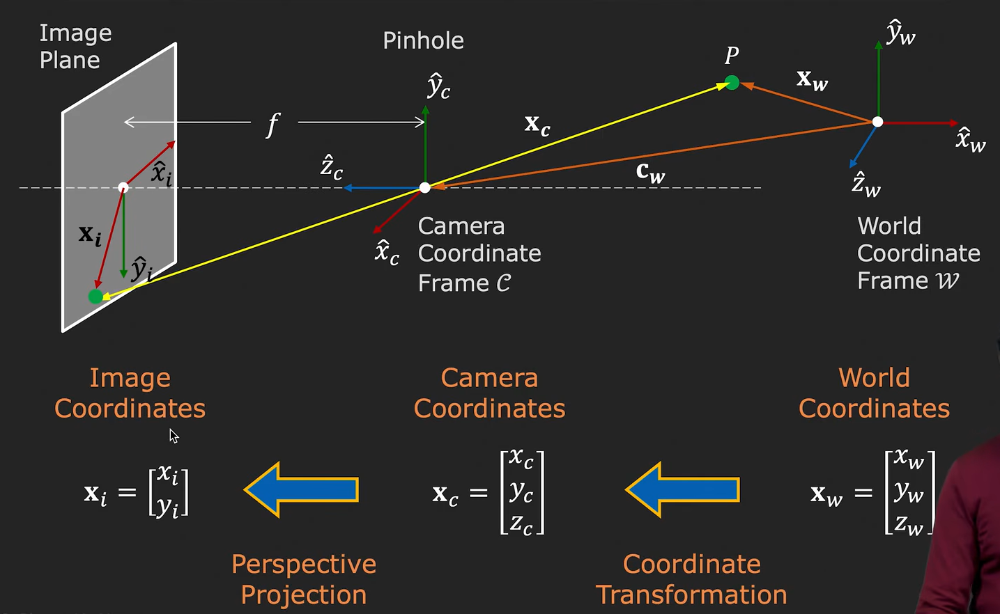
1) Extrinsic Prameter
- \(t \in \mathbb{R}^{3\times 1}\) \[X_c = R \cdot X_w + t\]
- translation 행렬 t: 모든 좌표의 기준점이 카메라 렌즈의 중심으로 옮겨짐
- rotation 행렬 R: 월드의 축들이 회전해 카메라 z,x,y로 옮겨짐
2) Intrinsic Parameter: Calibration Matrix
\[K = \begin{pmatrix} f_x & 0 & c_x \\ 0 &f_y & c_y \\ 0 & 0 & 1 \end{pmatrix}\] - \(f_x, \: f_y\)(focal length, 초점 거리): 카메라 렌즈(핀홀) 중심에서 이미지 이미지 센서까지의 초점 거리를 픽셀 단위로 표현한 것, 크면 zoom-in 효과, 작으면 wide-angle - \(c_x, \: c_y\)(principal point, 주점): 이미지의 광학점 중심, 보통 이미지의 중심(W/2, H/2) - \(f_x, \: f_y, \: c_x, \: c_y\): Intrinsic parameters of camera, They represent the camera’s internal geometry
3) Perspective Projection: 3D(camera coordinate) \(\rightarrow\) 2D(image coordinate)
\[X_i = \begin{pmatrix} u \\ v \\ 1 \end{pmatrix} = K \cdot \begin{pmatrix} x_c/z_c \\ y_c/z_c \\ z_c/z_c \end{pmatrix} = \begin{pmatrix} f_x & 0 & c_x \\ 0 &f_y & c_y \\ 0 & 0 & 1 \end{pmatrix}\begin{pmatrix} x_c/z_c \\ y_c/z_c \\ 1 \end{pmatrix}\] \[u = f_x \cdot \frac{x_c}{z_c} + c_x\] \[v = f_y \cdot \frac{y_c}{z_c} + c_y\] - \(Z\)로 나누는 것: 원근법의 수학적 표현, 김피가 크면 이미지에서 작게 보이도록
4) Backprojection: 2D \(\rightarrow\) 3D (Ray Map)
\(X_i = \begin{pmatrix} u \\ v \\ 1 \end{pmatrix} = K \cdot X_c/z_c\) \[d = X_c/z_c = K^{-1}\begin{pmatrix} u \\ v \\ 1 \end{pmatrix}\]
d: ray direction
각 픽셀에 \(K^{-1}\)을 곱해서 그 pixel을 통과하는 3D 방향 벡터를 얻음
ray map \(\mathbb{R}^{H \times W \times 3}\) \[K^{-1} = \begin{pmatrix} \frac{1}{f_x} & 0 & -\frac{c_x}{f_x} \\ 0 & \frac{1}{f_y} & -\frac{c_y}{f_y} \\ 0 & 0 & 1 \end{pmatrix}\]
- weak vs full-perspective projection
- full-perspective projection
- u = f · (X / Z) + cx
- v = f · (Y / Z) + cy
- weak-perspective projection
- u = s · X + tx
- u = s · X + ty
- f/z = s
3. Crop과 위치 정보 손실 문제
1) Top-down HMR의 crop 문제: HMR(CVPR’2018)
- HMR계열은 사람을 detect(YOLO, Faster R-CNN) \(\rightarrow\) crop \(\rightarrow\) 네트워크 입력 순서로 처리
- Crop을 하면 사람의 이미지가 어디에 있었는지 정보가 사라짐
- 같은 포즈인 왼쪽 끝 사람과 중앙의 사람의 crop은 동일하게 보이지만 실제 3D위치는 매우 다름
- \(\hat{\mathbf{x}} = s \Pi(RX(\theta, \beta)) + t, \:\) whete \(\Pi\) is an 2D projection
- weak-perspective projection
- \(\rightarrow\) s가 ’크기 x 거리’를 동시에 담고 있어서 분리가 불가능, 원근 왜곡이 무시됨, 깊이 차이에 따른 크기 변화를 계산하지 않고 똑같은 비율로 누름
2) CLIFF(2022)의 해결책 및 한계
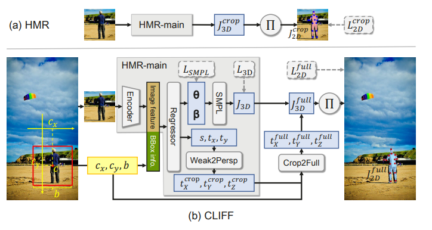
- encoder: ResNet-50 사용
- bbox 좌표(\(c_x, c_y, b\))- center x, center y, bbox size b를 focal length로 정규화 후 feature에 concat함
- bbox info를 통해 위치정보를 반영해 왜곡을 학습
- focal length로 나눠준 이유: 카메라와 무관하게 같은 3D 위치에 있는 사람은 같은 feature를 받게 하기 위해서
\[I_{bbox} = [\frac{c_x}{f_{CLIFF}}, \frac{c_y}{f_{CLIFF}}, \frac{b}{f_{CLIFF}}]\]
- HMR과 다르게 Loss를 full 이미지에 대해서 계산함
- crop 안에서의 projection은 perspective distortion(원근 왜곡)을 왜곡
- full frame에 대해 loss를 계산하면 실제 카메라의 perspective distortion을 그대로 반영
- Full-frame Supervision의 효과
- crop에서는 사람이 항상 중앙이여서 GT와의 오차가 아주 미세함. global translation을 정확히 학습해야할 동기(gradient)가 부족, 하지만 full-frame에서는 조금만 위치를 잘못하면 큰 loss가 발생하게 되어 global translation을 정확히 예측하도록 학습됨
- crop 안에서의 projection은 perspective distortion(원근 왜곡)을 왜곡
- crop 좌표계의 translation도 full-frame으로 변환
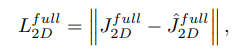
- HMR의 scale과 focal length로부터 카메라로부터의 depth(\(t_z\))를 계산함
- 처음부터 \(t_z\)를 추정하는 것이 아니기 때문에 완전한 full-perspective projection이 아님
- 한계
- 3개의 스칼라 값이 이미지 feature에 동일하게 concat됨, 여전히 픽셀별 차이를 표현할 수 없음 \(\rightarrow\) 왜곡이 무시됨
- focal length를 정규화에만 사용하기 때문에 bbox좌표만 보정하는 것, 각 픽셀의 ray direction을 계산하는 것이 아님
- crop2full 변환이 후처리, 네트워크가 crop 좌표에서 먼저 예측하고 이후 수식으로 변환하기 때문에 정확성이 떨어짐
- \(\rightarrow\) 완벽한 metric scale 복원에는 실패함
3) Metric HMSR
- bbox 좌표 3개 대신, HxWx3 크기의 ray map을 만들어서넣음
- 각 픽셀에 대해서 원본 이미지 기준의 ray direction을 계산
- 픽셀마다 다른 정보 -> 픽셀마다 다른 ray direction을 계산해 spatial resolution을 유지, ray map을 통해 perspective distortion의 정도를 알 수 있음
4. Camera HMR(3DV’2025)
1) HumanFoV
- 최초의 이미지에서 vertical FoV(Field of View)만을 예측하는 모델
- EXIF(500K images) datasets을 제안
- HRNet + MLP 구조 사용
- HRNet(High Resolution Network): 네트워크 층을 깊게 통과해도 이미지의 고해상도 공간 정부를 끝까지 유지하는 특징이 있음, Perspective distortion에 의한 변화는 미세한 픽셀 단위 스케일 차이에서 오므로 적합함
- focal length를 모르는 상황에서 자동으로 추정할 수 있음
1-1) FoV focal length 변환
- \(\upsilon = 2 \cdot \text{arctan} \left( \frac{sh}{2f} \right)\) \(\rightarrow \quad f = \frac{sh}{2 \cdot \text{tan} \left(\frac{\upsilon}{2}\right)}\)
- \(\upsilon\): vertical FoV
- \(sh\): 센서의 세로 길이
- 기기마다 물리적인 센서의 크기가 다름
- \(FocalLengthIn35mmFormat\) 데이터, 표준 35mm 풀프레임 카메라 (36mm x 24mm)크기 센서로 찍었으면 focal length가 몇 mm였을지 환산된 데이터.
- \(\rightarrow\) 가로사진 24mm, 세로사진 36mm 사용
- \(f\): focal length
- \(f_y = f \times \frac{H}{sh} = f = \frac{H}{2 \cdot \text{tan} \left(\frac{\upsilon}{2}\right)}\)
- \(H\): image height
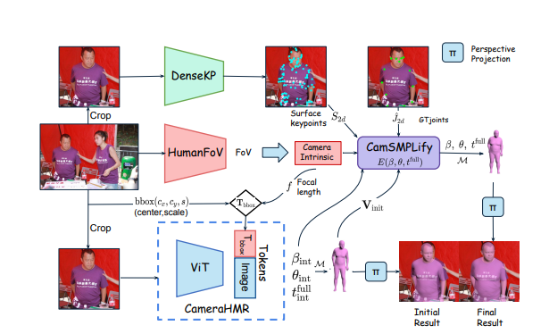
2) Pseudo GT 품질 개선
- HMR의 근본적 문제는, in-the-wild 이미지에 대한 3D GT가 없다는 것
- 기존의 pGT
- 이미지에서 2D keypoint를 찍고 SMPLify로 SMPL을 키포인트에 fitting하여 SMPL parameter를 얻음
- SMPLify는 weak-perspective 카메라를 가정, 실제 카메라는 full-perspective \(\rightarrow\) foreshortening이 심할때 2D 키포인트는 잘 맞지만 3D 포즈가 비현실적
- keypoint가 17개로 너무 sparse함, 체형은 거의 제약이 없음
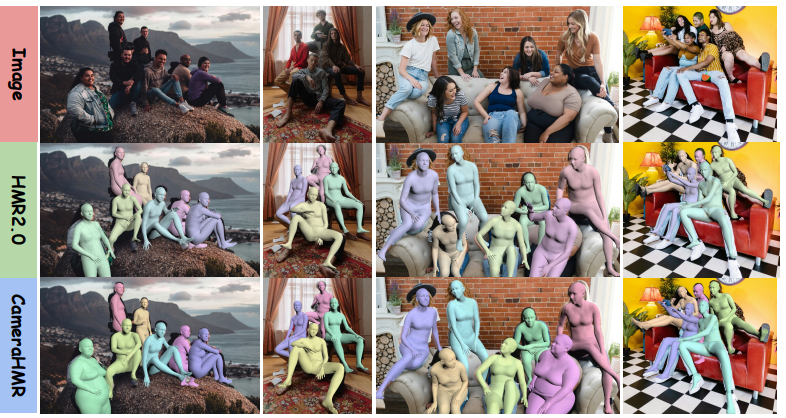
- 해결
- CamSMPLify:
- HumanFoV로 추정한 FoV로 focal length를 계산
- full-perspective camera model로 SMPLify를 다시 수행
- 기존 SMPLify의 weak-perspective를 full-perspective로 교체(scale 대신 \(t_z\)를 추정함) \[J_{2D} = s \cdot \Pi(R \cdot J_{3D}) + t_{xy}\] \[J_{2D} = K \cdot (R \cdot J_{3D} + t_{3D})\] \[x_{2D} = f \cdot \frac{X_{3D}}{Z_{3D}} + c_x\]
- DenseKP
- BEDLAM과 AGORA 합성 데이터셋으로 DenseKP(dense surpace keypoint detector)를 학습
- 138개의 surface keypoint 추정
- ViTPose architecture 사용
- 뚱뚱하거나 마른 사람의 shape parameter \(\beta\)의 정확도 개선
- Iterative Refinement
- CameraHMR모델 학습과 SMPLify 피팅을 반복적으로 수행, CameraHMR의 출력을 SMPLify 초기값으로 사용하면 수렴이 더 잘되고 개선된 pGT로 다시 cameraHMR을 학습하면 모델이 더 좋아지는 순환 구조
- CamSMPLify:
3) full-perspective HMR
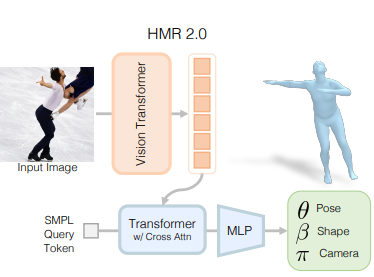
- HMR 2.0 아키텍처를 거의 그대로 사용하지만, decoder가 image token뿐만 아니라 bounding box token, focal length token에서 cross-attention 하도록 수정
- s(가짜 스케일) 대신 실제 카메라와의 물리적 거리 \(t_z\)를 포함한 full-perspective 3D parameter를 출력 가능
4) 한계
- Feature entanglement: 모든 patch token이 같은 FFN을 통과해, 하나의 feature에 pose 정보와 position 정보가 뒤섞여 있음, 하나를 수정하면 다른 것도 영향을 받음
- Focal length 추정 오차의 전파(cascading error): HumanFoV가 틀리면 HMR도 틀려짐
- Pixel-level metric이 아님. 여전히 CLIFF와 같이 이미지 feature에 동일하게 concat됨, 여전히 픽셀별 차이를 표현할 수 없음 \(\rightarrow\) 왜곡이 무시됨
5. MoE(Mixture of Experts)
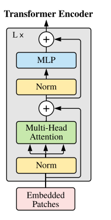
1) 일반 Transformer의 FFN
- Transformer block = Self-Attention + FFN \[\text{FFN}(\mathbf{x}) = W_2 \sigma_\text{gelu}(W_1\mathbf{x} ) \]
- 모든 token이 같은 FFN을 공유
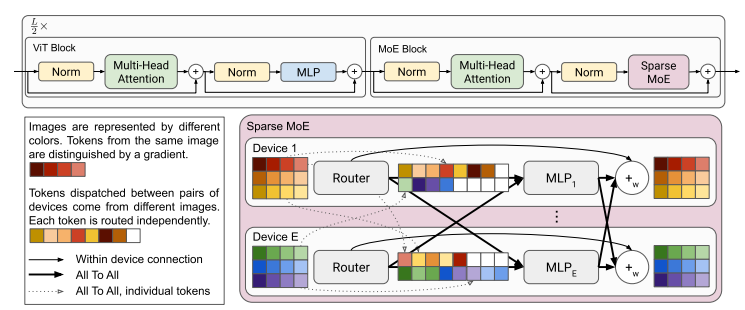
2) MoE의 기본 구조
- FFN 하나 대신 여러 개의 “Expert” FFN을 배치
- Router(게이트 네트워크)가 각 token을 어떤 expert로 보낼지 결정 \[\text{MoE}(\mathbf{x}) = \sum^R_{i=1}g(\mathbf{x})_i e_i(\mathbf{x})\]
- \(\mathbf{x} \in \mathbb{R}^D\)
- \(e_i\): expert \(i\)의 funtion \(\mathbb{R}^D \mapsto\mathbb{R}^D\)
- \(e_i(\mathbf{x}) = \text{MLP}_{\theta_i}(\mathbf{x})\)
- \(g\): expert들에 대한 가중치를 정하는 routing function \(\mathbb{R}^D \mapsto\mathbb{R}^E\)
- \(g(\mathbf{x}) = \text{TOP}_k(\text{softmax}(\mathbf{W}\mathbf{x}+ \epsilon))\)
- 핵심: 서로 다른 종류의 token이 서로 다른 expert(FFN)로 가면서 자연스럽게 specialization이 일어남
3) Load Balancing Loss
문제: 학습 초기에 특정 expert가 우연히 좋은 결과를 내면, router가 그 expert로 점점 더 많은 token을 보냄, 나머지 expert는 학습이 되지 않음
몇몇 expert만 사용되고 대부분의 expert가 사용되지 않음
\(\rightarrow\) load balancing loss(auxiliary loss)를 추가해 token이 expert들에 골고루 분배되도록 유도
입력 배치 X에서 개별 토큰과 routing function의 가중치곱 \(W\)의 softmax의 합, expert \(i\)에 대한 값은 벡터의 i번째 값
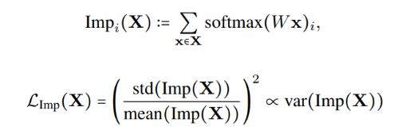
- Importance Loss: 각각의 expert의 importance에 대한 변동 계수: 분산을 평균의 제곱으로 나눈 값, 한 전문가만 독식하면 분산이 매우 커짐importance loss로 확률을 비슷하게 맞춰도 Top k 선택 과정을 거치면 실제 배정되는 토큰 수는 여전히 불균형일 수 있음, load loss는 실제로 각 전문가에게 할당되는 토큰의 개수를 균등하게 맞춰줌
\(\text{threshold}_k(x)\): 어떤 토큰 \(x\)에 대해 k번째 높은 점수를 구한 것
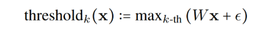
Top k 연산은 미분이 안되서 backpropagation 불가능
노이즈 \(\epsilon_{new}\)를 추가했을 때 \(i\)번째 expert의 점수가 threshold를 넘을 확률
\(\epsilon_{new} \sim \mathbf{N}(0, \sigma^2)\)을 가정하여 확률 계산
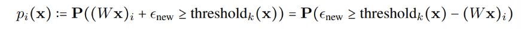
- 입력배치 X에서 expert \(i\)가 개별 토큰 x에 대해 threshold를 넘을 확률의 합
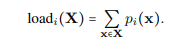
- Load Loss: 각각의 expert에 대한 P(\(i\)) 의 변동 계수
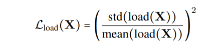
- auxiliary loss: Importance Loss와 Load Loss의 평균
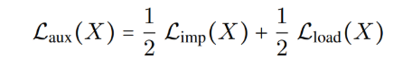
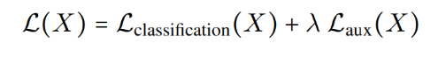
6. depth estimator
- 대부분의 depth estimator는 상대적 깊이를 출력해 scale ambiguity 존재
- 픽셀을 그저 딥러닝 패텅느로 맞춰서 사람에 대해 특화되어 있지 않음
7. MetricHMSR(CVPR’2026)
1) Abstract
- 단일 이미지에서 metric scale human mesh + sence 를 단일 network로 end-to-end로 동시 복원
- ray map으로 metric 복원, HumanMoE로 pose/position을 disentangle, 복원된 사람을 anchor로 scene depth를 보정
2) 연구 목적
- 기존의 문제
- Humans in 4D, Vibe, Pymaf 같은 모델들은 여전히 weak-perspective 사용
- 외부 모듈 의존: TRAM/BLADE같은 방법은 외부 depth estimator 모델에 의존 \(\rightarrow\) cascading error + 복잡한 pipeline
- Feature entanglement: 기존의 모델들은 하나의 네트워크로 pose도 맞추가 절대적 거리\(t_z\)도 맞춰야함, local pose와 global position을 구분 못함 entangle되어 하나를 수정하면 다른 것도 흔들림
3) Architecture
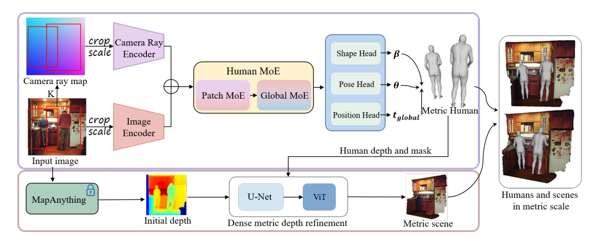
- input: A single monocular RGB image + K
3-1) Pixel-Aligned Camera Ray Map
\(K(f_x,f_y,c_x,c_y)\)는 알고 있다고 가정
- 모를 때는 VGGT 외부 모델로 focal length 추정
원본 이미지 pixel(\(u, v\))의 Ray: \[d = K^{-1} \cdot \begin{pmatrix} u & v & 1 \end{pmatrix}^T\]
Crop 후 변환된 intrinsic \(K'\): \[K' = \begin{pmatrix} f_x/s & 0 & (c_x - u_{bbox})/s \\0 & f_y/s & (c_y - v_{bbox})/s \\ 0& 0& 1\end{pmatrix}\]
\((u_{bbox}, v_{bbox})\): crop bbox의 top-left, \(s\): scaling factor
bbox top-left를 원점으로 이동
- \(u_{crop} = u - u_{bbox}\)
- \(v_{crop} = v - v_{bbox}\)
resize: s로 나눔
- \(u' = u_{crop} /s = (u- u_{bbox})/s\)
- \(v' = v_{crop} /s = (v- v_{bbox})/s\)
\(u'\)에 \(u=f_x \cdot(X/Z) + c_x\) 대입
\(u' =(f_x\cdot(X/Z) + c_x - u_{bbox}) /s = (f_x / s) \cdot (X/Z) + (c_x - u_{bbox}) /s\)
\(K'^{-1}\)을 구해서 각 픽셀에 적용해 원본 이미지 기준의 ray direction을 구함: H x W x 3 ray map 을 구함 #### 3-2) HumanMoE
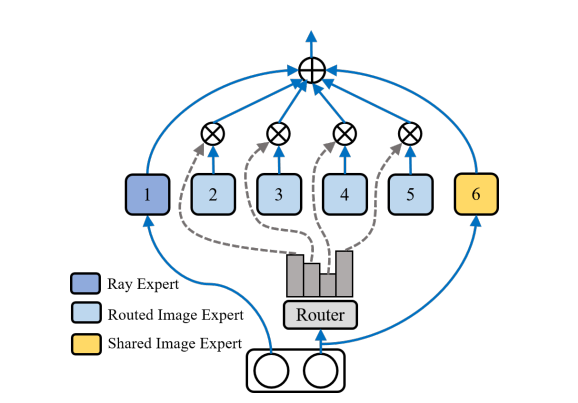
- 4개의 routed image expert: 서로 다른 시각적 지식 학습
- 1개의 shared image expert: 모든 token이 공유하는 공통 지식 학습, expert collapse를 방지하고, 범용적 패턴이 특정 expert에 중복 학습되는 것을 막음
- 1개의 ray expert: ray map token만 처리
- Soft MoE를 사용(Top k대신)
- HumanMoE:patch MoE + global MoE
- patch MoE: image patch token을 semantic에 따라 다른 expert로 routing, 비슷한 body part가 같은 expert로 가는 specialization
- Global MoE: full-image representation을 집약해 전체적 context 파악
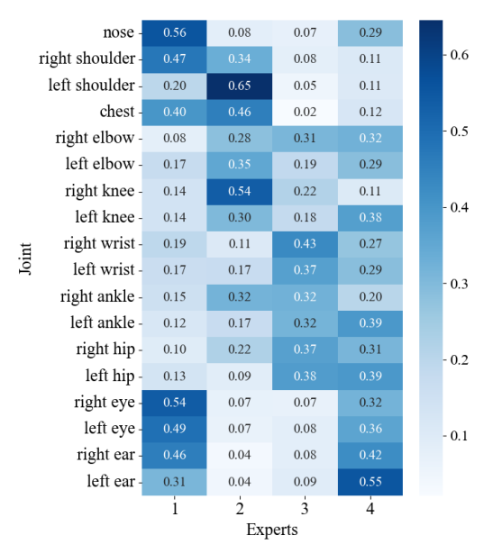
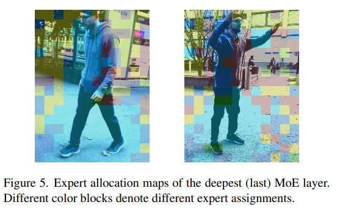
3-3) Human-Guided Metric Depth Refinement
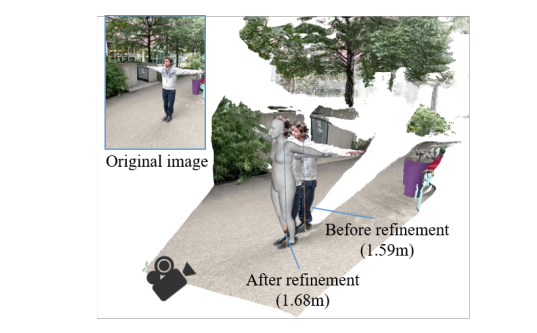